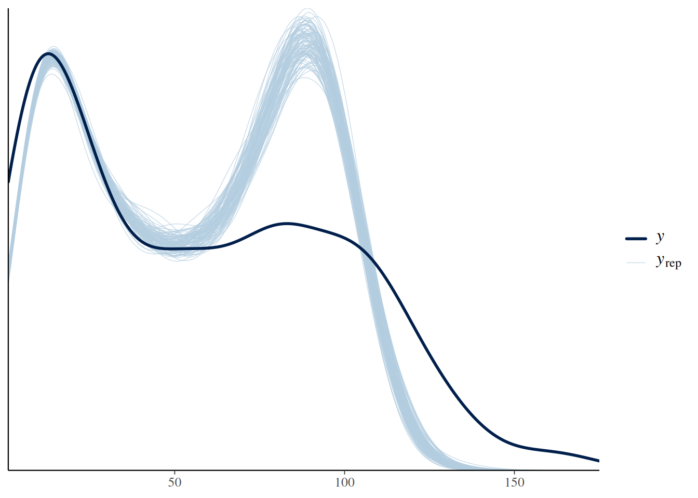

In many experiments, observations are not completely independent. Observations are grouped in units, and observations from the same unit are expected to behave more similar than observations from different units, under otherwise identical treatment conditions. For example, field experiments are grouped in different plots, or measurements are taken in different years. Treating all observations as independent leads to pseudoreplication, often resulting in lower uncertainty of parameter estimates and thus type-1 error inflation (false positive findings). Random-effects or mixed-effects models help accounting for random grouping variables (e.g., plot or year) and attributing uncertainty correctly.
In feeding experiments, predator individuals are often re-used for multiple feeding trials. Even when randomizing treatment conditions, predator ID acts as a grouping variable. Therefore observations are not independent, because, for example, attack rates and handling times are predator individuals’ traits. If the goal is to estimate a population-level mean attack rate and handling time, fitting a single attack rate and handling time a~1, h~1 will probably not explain a lot of the observed variance, if predator individuals are heterogeneous (e.g. different size). Also, estimates will be overly confident (falsely reduced uncertainty) due to the pseudoreplication. Alternatively, using predator ID as a predictor a~ID, h~ID and fitting predator-individual parameters will increase the amount of explained variation. However, this model will not produce estimates of population-level effects, which we are interested in. The solution is to use predator ID as a random effect, and a model such as a~(1|ID), h~(1|ID) will estimate population-level mean attack rates and handling times, as well as the individuals’ deviations from the population means.
As an example, we here work with data from Schr??der et al. (2016), downloaded from Figshare. It contains data from 49 individual least killifish feeding on nauplii. Feeding trials lasted 2 minutes and eaten prey were not replaced. Size of the predator individuals was recorded, but for didactic reasons we will ignore this predictor for now.
rm(list=ls())library(BayesFR)library(cowplot) # ggplot gridslibrary(mvtnorm) # multivariate normal distributiondf = df_Schroeder_et_al_2016_OEChead(df)
There is a substantial variation in the amount of eaten prey!
Fixed effects
We want to estimate population-level attack rate and handling time with a type 2 functional response. Ignoring pseudoreplication, we first fit a simple model using a~1, h~1. This is also called complete pooling, i.e. all information is pooled across predator individuals.
Family: binomial
Links: mu = identity
Formula: NE | trials(N0) ~ Type2H_dyn(N0, 1, 1, a, h)/N0
a ~ 1
h ~ 1
Data: df (Number of observations: 686)
Draws: 4 chains, each with iter = 2000; warmup = 1000; thin = 1;
total post-warmup draws = 4000
Regression Coefficients:
Estimate Est.Error l-95% CI u-95% CI Rhat Bulk_ESS Tail_ESS
a_Intercept 1.30 0.02 1.26 1.33 1.00 1845 2201
h_Intercept 0.01 0.00 0.01 0.01 1.00 1986 2384
Draws were sampled using sampling(NUTS). For each parameter, Bulk_ESS
and Tail_ESS are effective sample size measures, and Rhat is the potential
scale reduction factor on split chains (at convergence, Rhat = 1).
Credible intervals of parameter estimates are very narrow, as are credible intervals of the regression curve:
The prediction intervals, which include the Binomial distribution of the response around the mean fitted values, do not capture the observed variation in number of eaten prey.
This is also reflected in the posterior predictive check, which shows a substantial mismatch between the observed and predicted distribution of response values.
pp_check(fit.1, ndraws=100)

Alternatively, we could fit a model with individual attack rates and handling times for each predator, using predator ID as a categorical predictor a~ID, h~ID. Predator ID is a fixed effect here. This is also called no pooling, since no information is shared across predator individuals. However, we don’t get an estimate for population-level means. We skip this model here and move on the random effects.
Random effects
We need a model that estimates population-level effects, and accounts for the grouping factor predator ID as well. The random effects model a~(1|ID), h~(1|ID) estimates individual parameters \(a_i\) and \(h_i\) for the 49 predator individuals, assuming they are normally distributed \[a_i\sim\text{Normal}\left(\mu_a,\sigma_a\right)\]\[h_i\sim\text{Normal}\left(\mu_h,\sigma_h\right)\] with population-level means \(\mu_a\) and \(\mu_h\). These means and the standard deviations are free model parameters. This approach is called partial pooling, since information is shared across predator individuals by assuming they have a joint distribution.
There is only one problem: this model does not guarantee positive estimates for attack rate and handling times. But we can easily apply a log-link as seen before, defining parameters on their log scale: \[loga_i\sim\text{Normal}\left(\mu_{loga},\sigma_{loga}\right)\]\[logh_i\sim\text{Normal}\left(\mu_{logh},\sigma_{logh}\right)\] This is equivalent to assuming that individual attack rates and handling times (after transforming them back to original scale) follow a log-normal distribution. In brms, the (linear) random effects model loga~(1|ID) and the transformation nlf(a~exp(loga)) are easily specified in the model formula, same for handling time. We can choose priors for the \(\mu\) and \(\sigma\) (on logscale). We do not need any priors for the individual \(loga_i\) and \(logh_i\), since these are already defined through the random effects model.
Family: binomial
Links: mu = identity
Formula: NE | trials(N0) ~ Type2H_dyn(N0, 1, 1, a, h)/N0
a ~ exp(loga)
h ~ exp(logh)
loga ~ (1 | ID)
logh ~ (1 | ID)
Data: df (Number of observations: 686)
Draws: 4 chains, each with iter = 3000; warmup = 1500; thin = 1;
total post-warmup draws = 6000
Multilevel Hyperparameters:
~ID (Number of levels: 49)
Estimate Est.Error l-95% CI u-95% CI Rhat Bulk_ESS Tail_ESS
sd(loga_Intercept) 0.74 0.08 0.60 0.91 1.00 522 1291
sd(logh_Intercept) 0.42 0.04 0.34 0.52 1.00 495 1117
Regression Coefficients:
Estimate Est.Error l-95% CI u-95% CI Rhat Bulk_ESS Tail_ESS
loga_Intercept 0.25 0.11 0.03 0.46 1.02 222 540
logh_Intercept -4.56 0.06 -4.67 -4.44 1.01 293 474
Draws were sampled using sampling(NUTS). For each parameter, Bulk_ESS
and Tail_ESS are effective sample size measures, and Rhat is the potential
scale reduction factor on split chains (at convergence, Rhat = 1).
The summary table displays estimates for population-level means loga_Intercept and the standard deviation of individual parameters sd(loga_Intercept) (all on logscale). It does not show the individual attack rates and handling times. These are computed with the fitted() function by specifying nlpar= and supplying predator IDs in newdata=.
We still don’t know the population-level estimates on original scale, also called marginal estimates. Parameters loga_Intercept and logh_Intercept are on logscale. Although tempting, one should not compute the marginal estimates by applying exp() to the mean estimates. The mean is not invariant under nonlinear transformation. Only applying the transformation to all posterior samples and then computing mean and standard deviation produces correct quantities. Here, we specify re_formula=NA, which omits the random effects part and gives the right answer.
Ironically, conditional_effects plots marginal effects by default. Here, population-level predictions are shown. The credible intervals are much wider than in the previous model (a+h~1).
Conditional effects are plotted when specifying re_formula=NULL, including random effects defined by predator ID in conditions=. Slightly confusing, re_formula=NULL always includes random effects, while re_formula=NA omits them. Here, data and model fits for the 49 individuals are plotted separately.
In the previous model, we observed a negative correlation between attack rates and handling times. Their relationship, on logscale at least, was approximately linear and negative. This can be explained through body size: bigger predators can cover a larger area and also handle prey faster than smaller predators in a given time. Even without including body size explicitly, this relationship can be modelled via a covariance matrix. Instead of assuming attack rates and handling times are independent as above, their are now modelled with a multivariate normal distribution\[\begin{pmatrix} loga_i \\ logh_i \end{pmatrix}\sim\text{MVN}\left(\mu,\Sigma\right)\] Its mean vector and covariance matrix are defined as \[\mu=\begin{pmatrix} \mu_a \\ \mu_b \end{pmatrix},\ \
\Sigma=\begin{pmatrix} \sigma_a^2 & \rho_{ah} \sigma_a\sigma_h \\ \rho_{ah} \sigma_a\sigma_h & \sigma_h^2 \end{pmatrix}\] (dropping the log in subscripts for readability) with \(\mu_a,\mu_h,\sigma_a,\sigma_h\) as above and a new parameter \(\rho_{ah}\) describing the correlation between \(loga_i\) and \(logh_i\). This is standard practice in linear mixed models where, for instance, intercepts and slopes are modelled like this to improve predictive accuracy.
In brms, the multivariate normal distribution is used by adding an identifier, here group1, to the description of random effects: loga~(1|group1|ID), logh~(1|group1|ID). The identifier can be any name, and all variables with the same identifier are modelled as a joint multivariate normal.
Family: binomial
Links: mu = identity
Formula: NE | trials(N0) ~ Type2H_dyn(N0, 1, 1, a, h)/N0
a ~ exp(loga)
h ~ exp(logh)
loga ~ (1 | group1 | ID)
logh ~ (1 | group1 | ID)
Data: df (Number of observations: 686)
Draws: 4 chains, each with iter = 3000; warmup = 1500; thin = 1;
total post-warmup draws = 6000
Multilevel Hyperparameters:
~ID (Number of levels: 49)
Estimate Est.Error l-95% CI u-95% CI Rhat
sd(loga_Intercept) 0.74 0.08 0.61 0.92 1.00
sd(logh_Intercept) 0.41 0.05 0.34 0.51 1.00
cor(loga_Intercept,logh_Intercept) -0.70 0.08 -0.83 -0.52 1.00
Bulk_ESS Tail_ESS
sd(loga_Intercept) 1286 1782
sd(logh_Intercept) 1342 2193
cor(loga_Intercept,logh_Intercept) 1512 2445
Regression Coefficients:
Estimate Est.Error l-95% CI u-95% CI Rhat Bulk_ESS Tail_ESS
loga_Intercept 0.24 0.11 0.04 0.45 1.01 556 1259
logh_Intercept -4.56 0.06 -4.68 -4.44 1.01 941 1628
Draws were sampled using sampling(NUTS). For each parameter, Bulk_ESS
and Tail_ESS are effective sample size measures, and Rhat is the potential
scale reduction factor on split chains (at convergence, Rhat = 1).
Results are very close to the previous model. Here, we get an additional estimate of -0.70 for the correlation of attack rates and handling times. As above, posterior mean estimates for the parameters are extracted with fitted(). Additionally, the estimated MVN distribution from extracted mean vector mu and covariance matrix Sigma is visualized with contour lines.
While the previous model acknowledged the correlation between attack rates and handling times, it did not include body size (a likely driver of this correlation) as an explicit predictor. Since body size was measured for each predator individual in this dataset, we can use it as a predictor in a linear mixed model for attack rates and handling times. These models
\[loga_i = \mu_a + b_a\cdot\text{Size}_i+\delta_{a,i}\]\[logh_i = \mu_h + b_h\cdot\text{Size}_i+\delta_{h,i}\] now include both fixed effects parameters (intercept \(\mu_a\) & slope \(b_a\) with size) and random effects \(\delta_{a,i}\) (analogous for \(h\)). Here, random effects describe the the deviation from the perfect linear relationship predicted by size for each predator ID \(i\). Again, we model these with a multivariate normal distribution, where the average deviation is assumed to be 0 \[\begin{pmatrix} \delta_{a,i} \\ \delta_{h,i} \end{pmatrix}\sim\text{MVN}\left(0,\Sigma\right)\] In brms, this is easily coded by just adding the fixed effects predictor Size to the formulas loga~Size+(1|group1|ID), logh~Size+(1|group1|ID). Alternatively, we use scale(Size) as predictor: for this mean-centered version intercepts \(\mu_a,\mu_h\) describe parameter values for a size predator of mean body size, then. Priors as previously defined for nlpar="loga" and nlpar="logh" now set priors for both intercepts and slopes. New priors for the slopes are set by specifying coef="scaleSize" in a new line.
Family: binomial
Links: mu = identity
Formula: NE | trials(N0) ~ Type2H_dyn(N0, 1, 1, a, h)/N0
a ~ exp(loga)
h ~ exp(logh)
loga ~ scale(Size) + (1 | group1 | ID)
logh ~ scale(Size) + (1 | group1 | ID)
Data: df (Number of observations: 686)
Draws: 3 chains, each with iter = 3000; warmup = 1500; thin = 1;
total post-warmup draws = 4500
Multilevel Hyperparameters:
~ID (Number of levels: 49)
Estimate Est.Error l-95% CI u-95% CI Rhat
sd(loga_Intercept) 0.65 0.07 0.52 0.80 1.00
sd(logh_Intercept) 0.32 0.04 0.26 0.40 1.00
cor(loga_Intercept,logh_Intercept) -0.56 0.10 -0.74 -0.33 1.00
Bulk_ESS Tail_ESS
sd(loga_Intercept) 1514 2215
sd(logh_Intercept) 1709 2562
cor(loga_Intercept,logh_Intercept) 1439 2038
Regression Coefficients:
Estimate Est.Error l-95% CI u-95% CI Rhat Bulk_ESS Tail_ESS
loga_Intercept 0.24 0.09 0.06 0.43 1.00 1140 1624
loga_scaleSize 0.38 0.09 0.19 0.56 1.00 1085 1893
logh_Intercept -4.56 0.05 -4.65 -4.47 1.00 1434 2169
logh_scaleSize -0.25 0.05 -0.35 -0.16 1.00 1373 2139
Draws were sampled using sampling(NUTS). For each parameter, Bulk_ESS
and Tail_ESS are effective sample size measures, and Rhat is the potential
scale reduction factor on split chains (at convergence, Rhat = 1).
The fixed effects model parameters (linear model for loga and logh) are found in the regression table, while standard deviation and correlation for the random effects are found the the multilevel table. Note that there is still a negative correlation -0.56 in the random effects, but it is not as strong as the previous -0.70. Here, some of the variation in individual predators’ parameters is explained by Size now. That the correlation in the random effects (which now describe deviations from the linear model) does not disappear completely, could suggest that additional traits other than size drive the relationship between attack rate and handling time.
As before, the individual-level attack rates and handling times are not displayed in the summary, but can be computed with fitted(). We can plot them together with the linear model predictions for Size using conditional_effects(), either on logscale with nlpar=loga or on original scale nlpar=a.